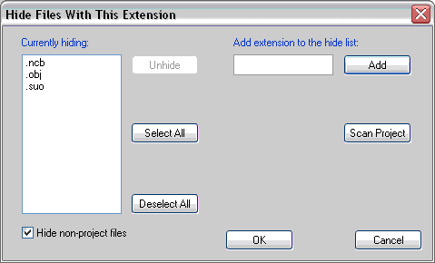

You can hide certain types of files in file view by clicking on the Apply File Filter button in the toolbar. The default filter is set to hide non-project files. You can edit the filter using the Change File Filter... item from the View menu.
You can also directly add or remove files with certain extensions from the filter. Select the file in question and select either Add Extension to File Filter or Remove Extension from File Filter from the Selection menu. Of course, you can remove an extension from the filter only when the file is visible--that is, the filtering is turned off.

The filter lets you hide files with certain extensions. Notice that the "hide non-project files" checkbox is active (and can be unchecked) only when you have some extensions in your filter.
The filter is global--it applies to all projects.
Hint: If you notice that some files are not displayed in Files view, it's probably because a filter is on.